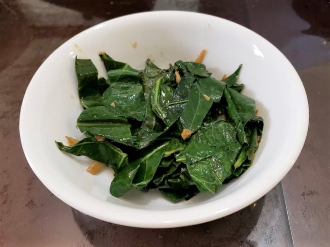

Gomen

Ingredients:
- 1 bunch Collard greens, stems removed, roughly chopped
- 4 tbsp Nit’ir Qibe
- 1 Onion, thinly sliced
- 2 cloves Garlic, minced
- 1 1/2 tsp Ginger, minced
- 1 tsp Ground coriander
- 1 tsp Cumin
- 1/2 tsp Salt
Instructions:
- Heat 3 tablespoons nit’ir qibe over medium to medium-high heat. Add in the onion and sauté for 5-7 minutes or until soft and translucent.
- Add in the garlic, ginger, and spices. Sauté for 2-3 minutes.
- Add the collard greens and another tablespoon of nit’ir qibe and cook until the collards turn bright green and are wilted but still a slightly crispy, 5-7 minutes.